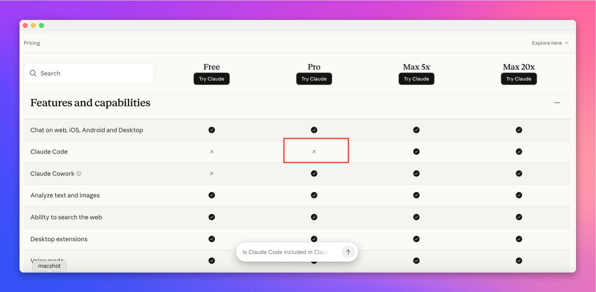

- 가격 페이지: claude.com/pricing
- 도움말 1: Using Claude Code with your Pro or Max plan
- 도움말 2: Choosing a Claude plan
- 도움말 3: What is the Max plan?
- 이전 관련 글: Claude 구독 제도 변경, OpenClaw 금지가 알려준 AI 서비스의 진짜 위기
Anthropic 가격 페이지를 보다 보면 지금 좀 이상합니다.
상단 요약만 보면 Pro에 Claude Code가 포함되는 것처럼 적혀 있습니다. 근데 아래 비교표에서는 Claude Code 행의 Pro 칸이 X로 보입니다.
이게 사실이면 영향이 큽니다. 월 20달러짜리 Pro에서 Claude Code를 빼고, 사실상 Max 5x 이상으로 올리라는 신호가 되기 때문입니다.
근데 더 헷갈리는 건, 도움말 문서는 여전히 Pro 또는 Max 플랜으로 Claude Code를 쓸 수 있다고 적고 있다는 점입니다.
즉, 지금 상황은 단순합니다. 정책이 바뀐 건지, 가격 페이지 표기만 먼저 바뀐 건지, 아니면 문서 정리가 안 된 건지 아직 깔끔하게 맞지 않음.

claude.com/pricing 화면 캡처. 비교표에서는 Claude Code 행의 Pro 칸이 X로 표시되어 있음.1. 지금 사용자들이 놀라는 이유는 아주 단순함
대부분의 사용자는 이렇게 이해해 왔습니다.
- Free: 체험판
- Pro: 일반 사용자용 유료 플랜
- Max 5x / Max 20x: 많이 쓰는 헤비 유저용 상위 플랜
그러니까 Claude Code도 당연히 Pro에서 기본적으로 쓰고, 많이 쓰는 사람만 Max로 올리는 구조로 받아들였던 겁니다.
그런데 가격 페이지 비교표에서 갑자기 Pro 아래 Claude Code가 X로 보이면 해석이 달라집니다.
- Pro는 웹/앱 중심
- Claude Code는 Max 이상 전용
- 개발자 워크플로우는 사실상 상위 요금제로 유도
이렇게 읽히기 때문입니다.
2. 근데 공식 문서끼리도 지금 말이 안 맞음
여기서 핵심은 “가격 페이지 한 군데가 이상하다”가 아닙니다. Anthropic 공식 문서끼리도 현재 메시지가 충돌하고 있음.
2-1. 가격 페이지 상단 요약은 Pro에 Claude Code 포함처럼 보임
claude.com/pricing를 텍스트로 읽어보면 Pro 설명에는 이렇게 적혀 있습니다.
- More usage
- Includes Claude Code
- Includes Claude Cowork
즉 상단 요약만 보면, Pro에는 여전히 Claude Code가 들어가는 걸로 읽힙니다.
2-2. 근데 같은 가격 페이지 비교표는 Pro에 X로 보임
문제는 같은 페이지 안 아래 비교표입니다.
거기서는 Claude Code 행에서:
- Free: X
- Pro: X처럼 보임
- Max 5x: 체크
- Max 20x: 체크
그래서 사용자는 당연히 이렇게 반응하게 됩니다.
아니, 위에서는 포함이라며. 아래 표에서는 왜 빠졌지?
이건 단순 오해가 아니라 가격 페이지 자체가 혼선을 만들고 있는 상태입니다.
2-3. 도움말 문서는 아직도 Pro 또는 Max라고 씀
더 결정적인 건 도움말 문서입니다.
Anthropic 도움말의 Using Claude Code with your Pro or Max plan 문서는 아예 첫 문장부터 이렇게 시작합니다.
- 이 문서는 Pro 또는 Max 플랜 구독자가 Claude Code에 접근하는 경우에 적용됨
- Pro와 Max는 Claude와 Claude Code를 하나의 구독으로 함께 사용한다고 설명함
- usage limit도 Claude와 Claude Code가 같이 공유된다고 적음
즉 도움말 문서 기준으로는 아직 Pro에서 Claude Code 사용 가능이라는 메시지가 살아 있습니다.
3. 그래서 지금 가능한 해석은 3개 정도임
현재 시점에서 가장 현실적인 해석은 아래 셋 중 하나입니다.
1) 가격 페이지 비교표가 먼저 바뀌었고 정책 변경이 뒤따르는 중
이 경우가 맞다면, 제일 큰 변화입니다.
- Pro에서는 Claude Code가 빠지고
- Max부터 Claude Code가 포함되며
- 개발자 사용자는 사실상 상위 요금제로 이동해야 함
이렇게 되면 Anthropic은 웹 사용자와 코드 사용자 사이를 더 강하게 분리하게 됩니다.
2) 비교표 표기 실수거나 A/B 테스트 중
이 경우도 충분히 가능함.
왜냐하면 같은 가격 페이지 안에서도 문구가 충돌하고, 도움말 문서는 아직 Pro 지원 기준으로 남아 있기 때문입니다.
즉 표 하나가 먼저 바뀌었지만, 전체 정책이 확정된 건 아닐 수도 있습니다.
3) 지역·계정·롤아웃 차이
가장 현실적인 시나리오 중 하나입니다.
- 지역별 표기 차이
- 신규 가입자와 기존 가입자 차이
- 순차 롤아웃 중인 정책 반영 차이
이 경우 사용자가 보는 화면이 서로 다를 수 있습니다.
4. 만약 진짜로 Pro에서 Claude Code를 막는 거라면 파장은 꽤 큼
이건 단순히 기능 하나 빠지는 문제가 아닙니다.
4-1. 개발자 진입 가격이 확 올라감
지금까지는 많은 개발자가 Pro 20달러를 Claude Code 입문 요금제로 생각했습니다.
근데 이게 Max 기준으로 올라가면:
- Max 5x: 100달러
- Max 20x: 200달러
즉 체감상 5배에서 10배 가까운 점프가 생깁니다.
이건 가볍게 써보려는 개인 개발자, 1인 창업자, 학생 입장에서는 부담이 큽니다.
4-2. Claude 앱과 Claude Code의 상품 분리가 더 선명해짐
Anthropic 입장에서는 이유가 있을 겁니다.
Claude Code 사용자는 일반 채팅 사용자보다:
- 더 오래 붙잡고
- 더 많은 토큰을 쓰고
- 더 자주 세션을 반복하고
- 저장소 전체를 넣고 길게 작업하는 경우가 많음
그러니까 수익성 관점에서는 “같은 20달러를 내는 사용자”로 보기 어렵습니다.
결국 Anthropic이 보고 싶은 그림은 이걸 수도 있습니다.
- Pro: 일반 생산성 사용자
- Max: 진짜 헤비 유저, 코딩 유저, 장시간 세션 사용자
4-3. 경쟁 서비스 비교가 다시 시작됨
이게 확정되면 비교 구도도 바뀝니다.
- GitHub Copilot
- Cursor
- OpenAI Codex 계열
- Gemini CLI / API 조합
- 로컬 + API 하이브리드 워크플로우
다시 말해, Anthropic이 기능은 강한데 진입가격도 강한 서비스로 재포지셔닝될 수 있습니다.
5. 지금 사용자 입장에서 제일 중요한 체크포인트
지금은 감정적으로 반응하기보다, 딱 이것만 보면 됩니다.
체크 1. 내 계정에서 실제 Claude Code 인증이 되는가
가장 중요한 건 내 계정입니다.
가격표보다 먼저 봐야 하는 건:
- 지금 내 Pro 계정이 Claude Code 로그인에 실제로 붙는지
- usage가 Pro로 집계되는지
- 제한 메시지가 어떻게 뜨는지
표가 이상해도 실제 계정이 계속 동작하면, 아직 완전 차단이라고 단정하긴 어렵습니다.
체크 2. 도움말 문서가 바뀌는가
정책 변경은 보통 도움말 문서 업데이트가 같이 따라옵니다.
특히 아래 문서가 바뀌면 거의 확정 신호로 봐도 됩니다.
- Using Claude Code with your Pro or Max plan
- Choosing a Claude plan
- What is the Max plan
지금은 이 문서들이 아직 Pro를 포함한 설명을 유지하고 있습니다.
체크 3. 기존 가입자와 신규 가입자가 같은지
이런 변경은 자주 이렇게 갑니다.
- 신규 가입자만 새 정책 적용
- 기존 가입자는 유예
- 지역별 순차 반영
그래서 “누구는 된다, 누구는 안 된다”가 동시에 나올 수 있습니다.
6. 제 생각은 이쪽에 가까움
지금 상태만 놓고 보면, 저는 정책 변경 가능성은 있지만 아직 최종 문구 정리는 안 끝난 상태에 가깝다고 봅니다.
이유는 단순합니다.
- 가격 페이지 상단 요약은 Pro 포함처럼 적혀 있고
- 비교표는 Pro 제외처럼 보이고
- 도움말 문서는 아직 Pro/Max 둘 다 지원한다고 말함
이 셋이 동시에 맞을 수는 없습니다.
그래서 지금 제일 정확한 표현은 이겁니다.
“Claude Pro에서 Claude Code가 빠질 수 있다는 신호가 가격 페이지에 나타났지만, Anthropic 공식 문서 전체 기준으로는 아직 메시지가 충돌하고 있다.”
이게 제일 팩트에 가깝습니다.
7. 빠르게 정리하면
claude.com/pricing비교표에서는 Pro의 Claude Code가 X로 보임- 근데 같은 가격 페이지 상단 요약에는 Includes Claude Code가 들어가 있음
- Anthropic 도움말 문서도 아직 Pro 또는 Max로 Claude Code 사용 가능이라고 설명함
- 그래서 지금은 정책 확정보다 공식 문서 충돌 상태로 보는 편이 안전함
- 다만 이 표기가 진짜 정책 예고라면, Claude Code는 사실상 Max 중심 상품으로 재편될 가능성이 큼
결국 중요한 건 한 문장입니다.
지금은 “완전 확정”보다 “강한 이상 신호”로 보는 게 맞음. 근데 그 신호 자체는 꽤 무겁습니다.